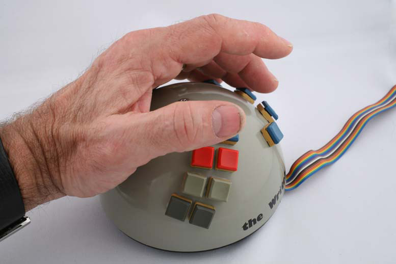

WriteHander
Twelve-key one-handed chording keyboard for left or right hand.

Overview
The WriteHander is one of the earliest commercial attempts at a compact, eyes-free chorded text-entry device. Introduced in 1978 by the NewO Company, it was a handheld, one‑handed keyboard that produced characters through simultaneous keystrokes (chords) rather than sequential presses. The device was designed for portability and mobility, allowing a user to type while holding the unit in one hand and leaving the other hand free—a concept decades ahead of later wearable keyboards.
Physically, the WriteHander resembled a small paperback book with a six‑key arrangement: five finger keys and a thumb key. Its small alphanumeric display gave immediate visual feedback of the entered character. By relying on chord combinations, an experienced user could input the entire ASCII character set without ever looking at the keys, making it suitable for notetaking, tele‑operation, or data entry in constrained environments.
Although its commercial life was brief, the WriteHander pre‑figured later chording devices such as the Microwriter (1980), the Twiddler, and modern wearable keyers. It stands as a key artifact in the lineage of alternative keyboard research, bridging the gap from early stenographic machines to present‑day mobile and accessible text‑input systems.
Deep dive
The WriteHander emerged during a period when personal computers were proliferating but input methods were still tied to desk‑bound typewriter‑style keyboards. Chording itself had a long history—in stenotype machines and Braille writers—but commercial electronic chorders for general computing did not yet exist. NewO Company, a now‑obscure firm possibly based in the United Kingdom or United States, seized on the idea of a one‑handed, cable‑connected chord keyboard. Their aim was to produce a truly portable writing tool that freed users from the physical desk. The WriteHander predated the better‑known Microwriter (1980) by two years, placing it among the very first products to bring chording to the consumer electronics market.
The WriteHander was a molded plastic unit roughly the size of a small paperback novel. Its main face held five circular mechanical keys in a row for the fingers, while a thumb key sat on the right side (for right‑handed users) or was positioned ergonomically for the thumb. Each key gave a distinct tactile click when pressed. A single‑line alphanumeric display—likely an LED or early vacuum‑fluorescent type—showed the character just typed. The device communicated with a host computer over a serial cable, drawing power from the host. The absence of a battery kept it lightweight, at the cost of tethering the user. Production numbers were likely very low, and surviving units are extremely rare.
Text entry relied on pressing a combination of the six keys simultaneously. Each chord corresponded to a letter, digit, punctuation mark, or control code, following a memorized chart. For example, the ‘A’ chord might be index+middle finger, while ‘E’ could be index+pinky. The thumb key frequently served as a mode‑shift, enabling uppercase, numeric, or symbol layers. Typing was essentially a continuous sequence of brief chording motions. Once the mapping was learned, the user could type without looking at the keyboard, receiving confirmation from the display or, later, from an auditory feedback mechanism if the host provided it. The design traded the simplicity of a standard keyboard for dramatic size reduction and hands‑free flexibility, but required a significant initial learning investment.
The WriteHander failed to find a sustainable market. In the late 1970s the personal computer industry was overwhelmingly oriented toward full‑size QWERTY keyboards, and the idea of learning a completely new input method held little appeal for mainstream users. The high retail cost relative to early home computers, combined with a complete lack of software support for chord‑based input, limited sales to a small circle of enthusiasts and experimenters. NewO Company appears to have discontinued the product within a few years and subsequently faded from the industry. Today, the WriteHander is a rare collector’s item, known chiefly to keyboard historians and vintage computing aficionados.
Despite its commercial failure, the WriteHander occupies an important position in the history of human‑computer interaction. It was among the first portable chord keyboards sold to the public, demonstrating that a one‑handed, eyes‑free text entry device was technically feasible and could be built with off‑the‑shelf components. The concept directly influenced Cy Endfield’s Microwriter, which achieved greater recognition in the early 1980s, and can be traced through successive generations of chording devices—the Twiddler, the Septambic keyer, and contemporary wearable input research. In the context of mobile and ubiquitous computing, the WriteHander’s ambition to decouple text entry from the desk continues to resonate, making it a foundational artifact for studies of alternative and accessible keyboards.
Team & pioneers
- NewO Company. Manufacturer; designer unknown
Media

Sources
- Bill Buxton, “CASE STUDY 2: CHORD KEYBOARDS” (PDF), covers the history of chorded input including early commercial attempts.
- Wikipedia, “Chorded keyboard” — outlines the Writehander as a 1978 one‑handed keyboard from NewO Company.
- Блог Вольки, “The NewO Writehander” — detailed description and photographs of the device.